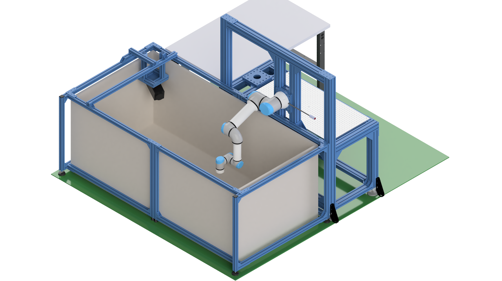
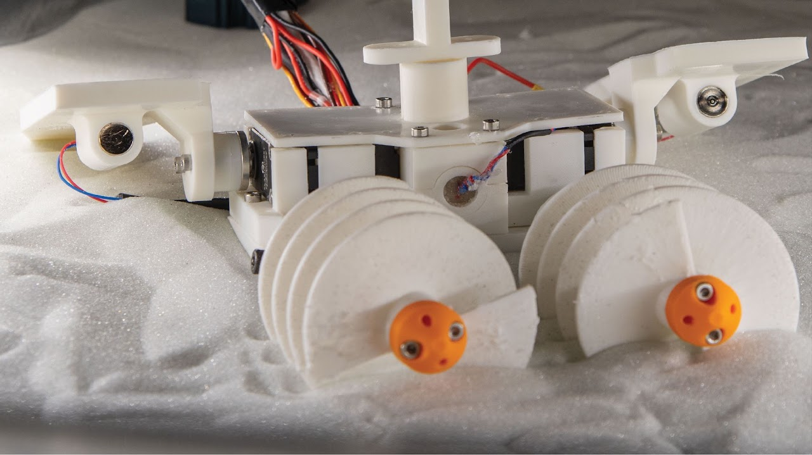
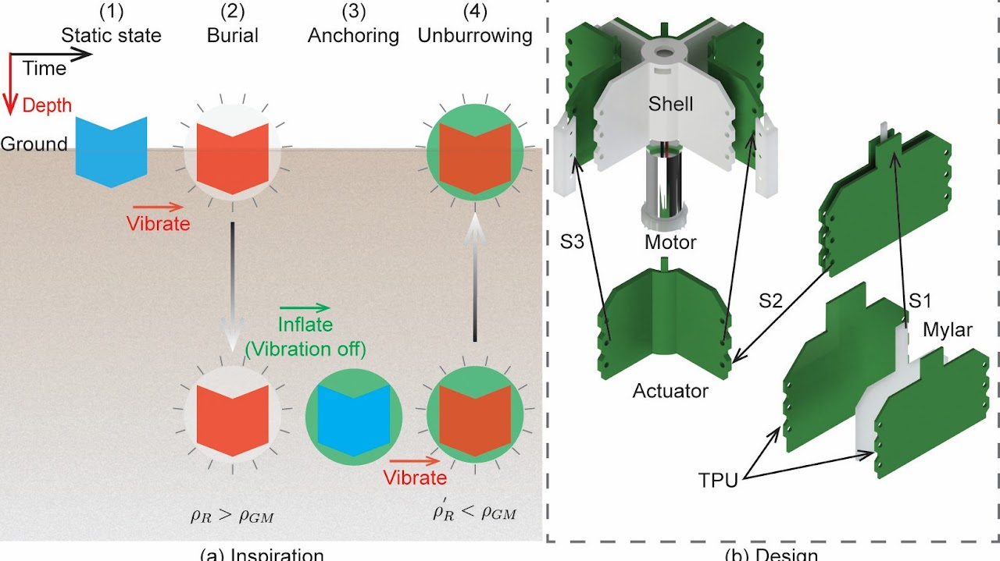
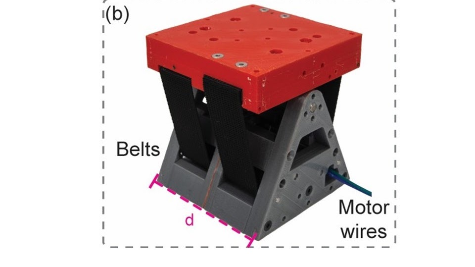
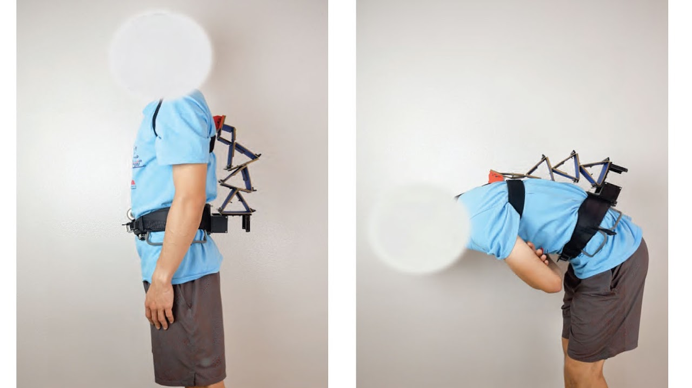
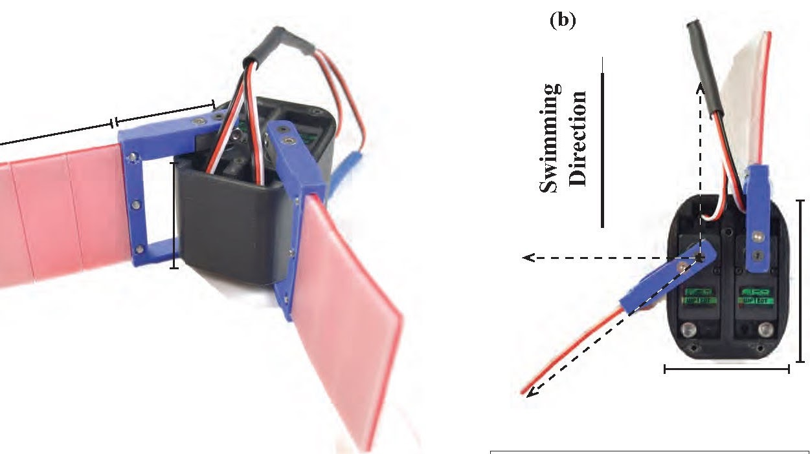

2023 – 2025
MOSoRo Platform
A modular experimental setup I built during my postdoc at UC San Diego. MOSoRo stands for Multimodal Ocean Soft Robot.
· Research topics
I have been working on a wide range of research projects, including experimental robotics, mechanism design, soft robotics for locomotion, granular-media locomotion, and origami-inspired robotics. Here are some of my published and shareable research projects.

A modular experimental setup I built during my postdoc at UC San Diego. MOSoRo stands for Multimodal Ocean Soft Robot.

A robot capable of both horizontal surface crawling and vertical digging in granular media.
Read the paper
This was my first conference paper — and my first RoboSoft paper — although I claim to be a soft robotics researcher.
RoboSoft 2025
Still not published yet.

That's me wearing an ICRA 2021 tee in the demo. Read our paper in IEEE/ASME Transactions on Mechatronics.
Read the paper
My first independent research project during my PhD. I am still working on this topic.
Read the paper (IEEE RA-L)